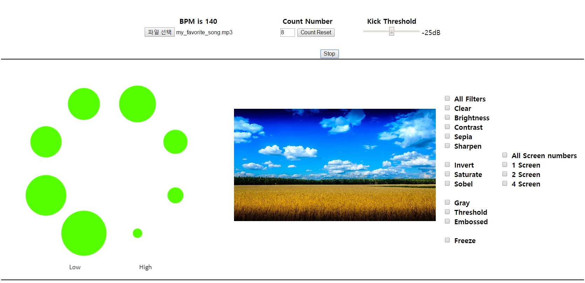
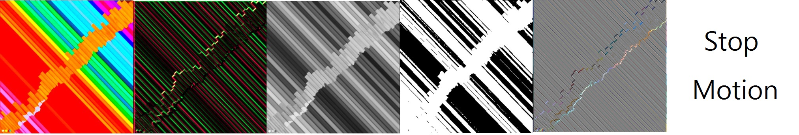

CTP431 Final Project 20130115
Music-Cam React Machine (MCRM)
1. Introduction
I love listening music, especially, when i use public transportation. If I'm in wifi-zone or have a lot of LTE data, there will be so many things to do with my iPhone. For example, Youtube, Facebook and web surfing. However, without internet I just listen to music, and sometimes it's boring. I want to do something cool with my favorite musics. This project starts at this point.
2. Components
- File uploader
Here you upload your music or video. After uploading, MCRM will automatically detect bpm of your file.
- Count number
You can modify count number. This number is needed when MCRM change filter. If count number is 4, MCRM will reselect a filter after every 4th beat. After change number, you should click 'Count Rest' button. It will reset a filter and counting.
- Kick Threshold
MCRM detect kick sound with amplitude of 88Hz frequency band. If kick threshold is -25dB, MCRM will recognize kick sound when 88Hz frequency band has more than -25dB. You can adjust this value to suit your music.
- Visualizer
Visualizer has 8 frequency bands. Starting at bottom-left, frequency increases in clock-wise. This visualizer has user interaction. If you click anywhere in visualizer boundary, audio will get peaking filter. Thus, you can boost bass or vocal or something with your mouse click and drag.
- Camera / Video
Basically it uses your web-cam and shows the screen. In case you upload video, it will show you the video. There are one video context and two canvas context. Back-canvas draw filtered video, and front-canvas draw back-canvas with selected screen number.
- Filters
There are several filters, so we can apply them to our camera or video. Some filters use basic CSS filter, the others use pixel computation. If you choose more than one filter, MCRM randomly choose one of your choices.
Clear Brightness Contrast Sepia Sharpen Invert

Saturate Sobel Gray Threshold Embossed Freeze
3. Codes
- index.html
- main.js
- octave_band.js
- hsv2rgb.js
- visualizer.js
- mouse_interact.js
- beat_detect.js
- draw_camera.js
4. Improvement point
- Sound detection
This machine can detect only kick sound. Moreover, it's not clearly working with kind of messy music. I want to upgrade this part, so this program can recognize various instruments with robust algorithm.
- Working on smartphone
This is web version of my first idea. My final goal is make this machine work on smartphone, so I can play it anywhere, anytime.
- SNOW filter
Filter is not enough yet. There are lots of camera filters in the world. If we can use 'Snow filter', it will be much more interesting.
- Vine
Vine has comfortable recording system. We can upload funny, filtered videos including our lives using Vine and MCRM